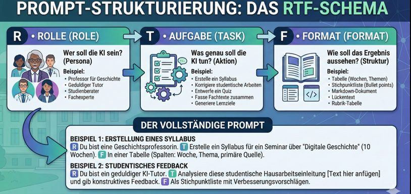

Wissensbasis
Nachschlagewerk zu KI-Kompetenzen, Sprachmodellen, Prompts und Werkzeugen
Was Sie in dieser Wissensbasis finden
- Kompakte Nachschlage-Abschnitte zu allen Grundbegriffen der vier Workshops,
- eine Alltagserklärung jedes Fachbegriffs vor dem technischen Detail,
- Verweise auf die Originalliteratur und auf die passenden Workshop-Stellen.
Diese Seite ist absichtlich ein einziges, durchsuchbares Dokument. Sie wächst mit jedem Workshop. Stand: 20.10.2026. Jeder Abschnitt endet mit Quellen zum Weiterlesen. Zum Selbsttest gibt es die Lernspiele.
Eine ausführliche Einführung in die Funktionsweise von Sprachmodellen und eine kommentierte Prompt-Sammlung finden Sie im Skript GenAI in der Lehre, insbesondere in Kapitel 2 und der Prompt-Beispiele-Sammlung.
Das 4D-Framework
AI Fluency ist die Fähigkeit, effektiv, effizient, ethisch und sicher mit KI zu arbeiten (Dakan & Feller, 2025). Bild: So wie man beim Autofahren nicht nur lenken, sondern auch Verkehrsregeln kennen, Gefahren einschätzen und für Schäden haften muss, braucht der Umgang mit KI mehr als gutes Prompten. Das Framework fasst das in vier Kompetenzen, den 4 Ds.
| Kompetenz | Leitfrage | Beispiel aus Workshop 1 |
|---|---|---|
| Delegate | Was soll die KI tun, was mache ich selbst, und mit welchem Werkzeug? | Die KI übersetzt Termine in Kalender-Code; ich gebe den Semesterzeitraum vor. |
| Describe | Wie beschreibe ich die Aufgabe so, dass ein brauchbares Ergebnis entsteht? | Prompt nach Rolle, Aufgabe und Format (RTF-Schema). |
| Discern | Ist das Ergebnis richtig, vollständig und brauchbar? | Stimmen Uhrzeiten und Räume nach dem Import? |
| Diligence | Übernehme ich Verantwortung für das, was ich mit dem Ergebnis tue? | Ich rechne die Aufgaben selbst und verlasse mich nicht auf eine schöne Tabelle. |
Delegate leitet sich vom lateinischen delegare ab, „abordnen, übertragen“; Diligence von diligentia, „Sorgfalt, Achtsamkeit“.
Zum Weiterlesen: Das englische Original des Frameworks mit Kursmaterial (Dakan & Feller, 2025).
Die folgenden Definitionen sind aus dem englischen Original übersetzt (Dakan & Feller, 2025). Lizenz des Originals: CC BY-NC-ND 4.0.
Drei Modalitäten der Mensch-KI-Interaktion
Modalität 1 — Automation (KI führt eine vom Menschen definierte Aufgabe aus). KI erledigt Aufgaben eigenständig, aber auf der Grundlage direkter menschlicher Anweisungen (etwa als Antwort auf einen Prompt). Besonders geeignet für repetitive, zeitintensive oder datenintensive Aufgaben. Erfordert klare Aufgabendefinition und Qualitätskontrolle. Beispiele: E-Mails, Zusammenfassungen, Social-Media-Posts, einfaches Coding.
Modalität 2 — Augmentation (KI und Mensch erledigen die Aufgabe gemeinsam). KI und Mensch definieren und führen Aufgaben iterativ gemeinsam aus und arbeiten kollaborativ auf ein Endziel hin. Schwerpunkt liegt auf der Stärkung menschlicher Kreativität durch einen KI-Denkpartner, nicht auf Ersetzung. Beispiele: Geschichten und Essays schreiben, Forschungsarbeiten, komplexes Coding.
Modalität 3 — Agency (Mensch konfiguriert KI für eigenständige zukünftige Tätigkeiten). Der Mensch konfiguriert die KI, damit sie zukünftige Aufgaben — auch für andere Nutzer:innen — selbstständig erledigt. Diese Modalität definiert nicht eine konkrete Aufgabe, sondern Eigenschaften und Verhalten einer KI. Erfordert ein tiefes Verständnis von Fähigkeiten und Grenzen. Beispiele: interaktive Spielcharaktere, Tutoren, Chatbots.
Mensch-KI-Interaktionen überbrücken häufig mehrere Modalitäten gleichzeitig; in der Praxis wechseln Anwendende selbst innerhalb eines Projekts zwischen ihnen.
Delegation — Schaffende Vision und Auswahl der richtigen KI-Werkzeuge
Delegation bezeichnet die Fähigkeit zu erkennen, wann und wie KI-Werkzeuge und -Modalitäten in kreativen und problemlösenden Prozessen wirksam eingesetzt werden. Sie umfasst das Verständnis der Möglichkeiten und Grenzen verschiedener KI-Technologien und das informierte Entscheiden, wann KI für Automation, Augmentation oder Agency genutzt wird.
Ziel- und Aufgabenbewusstsein (Goal and Task Awareness).
- Eine wirksame Zielvorstellung für ein Projekt entwerfen.
- Die Natur und die Anforderungen der Aufgabe(n) auf dem Weg zum definierten Ziel verstehen.
- Eine Aufgabe in KI-, Mensch- und kollaborative Anteile analysieren und zerlegen können.
- Voraussetzung für die effektive Integration von KI in kreative Arbeitsabläufe.
Plattformbewusstsein (Platform Awareness).
- Möglichkeiten und Grenzen aktueller KI-Werkzeuge kennen.
- Verschiedene KI-Plattformen und ihre spezifischen Stärken und Grenzen mit Blick auf das Projektziel kennen.
- KI-Werkzeuge nach Projektanforderungen, Budget, operativen und regulatorischen Bedürfnissen bewerten können.
- Voraussetzung für die Auswahl der optimalen KI-Werkzeuge für spezifische Aufgaben.
Aufgabendelegation (Task Delegation).
- KI- und menschliche Fähigkeiten so ausbalancieren, dass die kreative Vision optimal umgesetzt wird.
- Die Eigenschaften der drei Modalitäten (Automation, Augmentation, Agency) verstehen.
- Projektaufgaben optimal an Mensch und KI-Werkzeuge vergeben können.
- Voraussetzung für die erfolgreiche Zusammenarbeit zwischen Mensch und KI in kreativen Prozessen.
Description — Vision und Aufgaben so beschreiben, dass nützliche KI-Verhaltensweisen entstehen
Description umfasst die Fähigkeiten, Ideen, Anforderungen, Constraints und andere Aspekte kreativer Vorstellungen wirksam an KI-Systeme zu kommunizieren. Sie beinhaltet das Verfassen klarer, präziser und gut strukturierter Prompts (mit einem breiten Repertoire an Prompting-Techniken) und weiterer Elemente, die KI-Werkzeuge zu gewünschten Verhaltensweisen und Ergebnissen führen.
Produktbeschreibung (Product Description).
- Prompten, um das gewünschte Ergebnis zu definieren.
- Gewünschte Eigenschaften, Merkmale und Qualitäten des finalen KI-generierten Outputs klar artikulieren können.
- Eine kreative Vision in explizite, KI-verständliche Begriffe übersetzen können.
- Zentral, um KI-Werkzeuge zu Ergebnissen zu führen, die mit den Absichten der Schaffenden übereinstimmen.
Prozessbeschreibung (Process Description).
- Dialogisches Prompten für effektive iterative Zusammenarbeit.
- In einen dynamischen Hin-und-Her-Austausch mit KI-Werkzeugen treten können.
- Komplexe Aufgaben in eine Reihe kleinerer, handhabbarer Prompts zerlegen können.
- Wesentlich, um KI durch mehrstufige kreative Prozesse zu führen, im Einklang mit den menschlichen Mitwirkenden.
Verhaltensbeschreibung (Performance Description).
- Anweisendes Prompten, das zukünftige KI-Verhaltensweisen festlegt und ein positives Nutzungserlebnis ermöglicht.
- Definieren können, wie KI-erzeugte Inhalte oder Systeme sich verhalten oder mit der Welt interagieren sollen.
- Nutzungsbedürfnisse antizipieren und in Leitlinien für KI-Verhalten übersetzen können.
- Entscheidend, um zukünftige agentische KI-Verhaltensweisen zu ermöglichen, die mit Werten und Vorstellungen des Menschen übereinstimmen.
Discernment — Treffende Beurteilung des Nutzens von KI-Ergebnissen
Discernment umfasst die kritische Beurteilung KI-generierter Outputs hinsichtlich Qualität, Relevanz, möglicher Verzerrungen und weiterer wesentlicher Merkmale. Dazu gehört auch die Fähigkeit, den Kollaborationsprozess mit KI-Werkzeugen zu iterieren und zu verfeinern.
Produkt-Beurteilung (Product Discernment).
- Output-Qualität bewerten und Verbesserungsmöglichkeiten identifizieren.
- Qualität, Relevanz und Wirksamkeit KI-generierter Inhalte kritisch beurteilen können.
- Stärken und Schwächen in KI-Outputs erkennen können.
- Zentral für das Aufrechterhalten hoher Standards in KI-gestützter kreativer Arbeit.
Prozess-Beurteilung (Process Discernment).
- Beurteilen, ob die Mensch-KI-Zusammenarbeit produktiv ist und wie sie verbessert werden kann.
- Die Wirksamkeit des Mensch-KI-Kooperationsprozesses evaluieren können.
- Erkennen, welche Aspekte der Mensch-KI-Interaktion am hilfreichsten sind und wo Verbesserungen möglich sind.
- Wesentlich für die Optimierung des KI-Einsatzes in kollaborativer kreativer Arbeit.
Verhaltens-Beurteilung (Performance Discernment).
- Beurteilen, ob eigenständige KI-Verhaltensweisen ein positives Nutzungserlebnis ermöglichen, und wie die KI besser angeleitet werden kann.
- Die Wirksamkeit von KI-Systemen in unabhängigen, nutzerorientierten Szenarien beurteilen können.
- Nutzerfeedback erheben und interpretieren, um beabsichtigte KI-Verhaltensweisen und Erlebnisse zu verfeinern und sicherzustellen.
- Wesentlich für die Gestaltung von Nutzungserlebnissen, die mit den Werten und der Vision des Projekts übereinstimmen.
Diligence — Verantwortung übernehmen und für KI-gestützte Endprodukte einstehen
Diligence bezeichnet den verantwortlichen Umgang mit KI, einschließlich ethischer Überlegungen, Transparenz über den KI-Einsatz und die Übernahme von Verantwortung für die mit KI-Unterstützung erstellten Endprodukte.
Creation Diligence — verantwortlicher Umgang während der Erzeugung.
- Verantwortungsvoller Umgang mit KI-Tools unter Einhaltung ethischer und rechtlicher Best Practices sowie Bewusstsein für Verzerrungen, Mängel, Auswirkungen auf Interessengruppen und andere externe Effekte.
- Verständnis und Anwendung ethischer Grundsätze während des gesamten KI-gestützten kreativen Prozesses.
- Fähigkeit, potenzielle Verzerrungen und ethische Risiken in KI-generierten Inhalten zu erkennen und zu mindern.
- Ziel: Gewährleistung eines verantwortungsvollen und sozialbewussten Einsatzes von KI.
Transparency Diligence — Offenlegung gegenüber Stakeholdern.
- Transparenz und Verantwortlichkeit bei der Verbreitung des Endprodukts.
- Verständnis für die Erwartungen und Normen des Publikums, der Branche und der Rechtsordnung in Bezug auf KI-generierte Inhalte.
- Fähigkeit, die Art der KI-Beteiligung am Prozess klar zu kommunizieren.
- Ziel: Wahrung von Vertrauen und Integrität bei der Verbreitung KI-gestützter Arbeiten.
Deployment Diligence — Verantwortung für Verifikation und Veröffentlichung.
- Verantwortung für die Verifikation von und das Einstehen für KI-gestützte Outputs übernehmen, einschließlich gründlicher Faktenprüfung, Test auf Korrektheit und Validierung von Aussagen.
- Angemessene Sicherheitsprüfungen und Testverfahren vor der Freigabe KI-gestützter Arbeit umsetzen.
- Verstehen, managen und Verantwortung übernehmen für potenzielle Risiken und Auswirkungen veröffentlichter KI-gestützter Inhalte oder Agenten.
- Ziel: Sicherstellung von Qualität, Sicherheit und Verlässlichkeit von Inhalten und Agenten, die durch Mensch-KI-Interaktion entstanden sind.
Sprachmodelle — die Grundbegriffe
Ein Large Language Model ist ein statistischer Textgenerator, der das jeweils nächstwahrscheinliche Wort vorhersagt, nicht mehr und nicht weniger. Bild: ein sehr gut geübter Autovervollständiger, der zu einem Satzanfang den passenden Folgetext rät. Technisch: ein tiefes neuronales Netz mit Transformer-Architektur, trainiert auf großen Textmengen.
Zum Weiterlesen: Abschnitt „Was heißt hier GPT?“ im Grundlagenskript (Bartnik, 2026); das frei verfügbare Standardlehrbuch zur Sprachverarbeitung (Jurafsky & Martin, 2025); der Originalaufsatz zur Transformer-Architektur (Vaswani et al., 2017).
Halluzination
Weil ein Sprachmodell Wahrscheinlichkeiten berechnet und kein Konzept von „wahr“ hat, kann es überzeugend klingende, aber erfundene Angaben machen: eine Raumnummer, eine Prüfungsregel, eine Literaturquelle. Das nennt man Halluzination (von lateinisch alucinari, „gedankenlos daherreden, träumen“). Je spezieller und lokaler die Frage, desto größer die Gefahr. Ein späterer Workshop zeigt, wie man Halluzinationen provoziert und mit Quellenbindung eindämmt.
Zum Weiterlesen: Abschnitt „Wie denken Sprachmodelle und warum halluzinieren sie?“ im Grundlagenskript (Bartnik, 2026); ein bebilderter Blick ins Innere eines Sprachmodells (Lindsey et al., 2025).
Reasoning vs. Instant
Instant-Modelle antworten sofort; Reasoning-Modelle „denken“ vor der Antwort Zwischenschritte durch (Chain-of-Thought). Reasoning lohnt sich bei mehrschrittigen Aufgaben wie dem Klausur-Lernplan, dauert aber länger.
Zum Weiterlesen: Abschnitt „Was können die Modelle – und was nicht?“ im Grundlagenskript (Bartnik, 2026); eine anschauliche Einführung in Reasoning-Modelle (Grootendorst, 2025a); die Vorstellung des ersten Reasoning-Modells durch OpenAI (OpenAI, 2024).
Werkzeuge und Harness
Harness heißt wörtlich „Geschirr“ oder „Gurtzeug“ und meint den Werkzeugring um das Sprachmodell: Websuche, Datei-Upload, Bilderkennung, Code-Ausführung, Gedächtnis. Die Qualität einer Antwort hängt oft stärker vom Harness ab als vom Modell allein (Grootendorst, 2025b).
Zum Weiterlesen: Abschnitt „Was nutzen – LLM, RAG oder Agent?“ im Grundlagenskript (Bartnik, 2026); eine bebilderte Einführung in Agenten (Grootendorst, 2025b); ausführlich für Technikinteressierte (Huyen, 2025).
Prompts bauen: das RTF-Schema
Ein Prompt (englisch für „Aufforderung, Stichwort“, vom lateinischen promptus, „bereit, zur Hand“) ist die Anweisung, die Sie der KI geben. Das einfachste tragfähige Gerüst hat drei Teile:
- Role — Wer soll die KI sein? „Du bist ein erfahrener Fachtutor für Ingenieurwesen.“
- Task — Was genau soll sie tun? „Sortiere die Themen nach fachlichen Abhängigkeiten.“
- Format — Wie soll das Ergebnis aussehen? „Als Tabelle mit vier Spalten.“

Ein Prompt ist nie beim ersten Versuch fertig. Rechnen Sie mit zwei bis drei Runden, in denen Sie nachschärfen: Was hat gefehlt, was war zu viel?
Wer weiterbauen will, findet im Prompt-Pattern-Katalog von White et al. (2023) sechzehn erprobte Bauformen, etwa Persona, Template oder Flipped Interaction (die KI stellt Ihnen Fragen statt umgekehrt).
Zum Weiterlesen: Abschnitte „Zentrale Bausteine: Rolle, Aufgabe, Format und Beispiele“ und „Was die großen KI-Labore empfehlen“ im Grundlagenskript (Bartnik, 2026); die deutschsprachige Prompt-Anleitung von Google (Google, 2025) und die von Anthropic (Anthropic, 2025); eine Studie, warum es keine Zauberformel für Prompts gibt (Meincke et al., 2025).
Werkzeuge im Studium
| Werkzeug | Stärke | Vorsicht |
|---|---|---|
| THKI Chat | kostenlos, über KI:connect, Anmeldung mit campusID, datenschutzfreundlich (TH Köln, 2025) | keine personenbezogenen Daten und keine urheberrechtlich geschützten Texte hochladen |
| ChatGPT, Claude, Gemini (Free) | Allrounder für Text, Code, Logik; meist mit Bild-Upload | Wissen stammt aus dem Training; bei Spezialwissen Halluzinationsgefahr |
| NotebookLM | antwortet nur auf Basis Ihrer hochgeladenen Dokumente, mit Quellenverweisen | nur so gut wie die Dokumente, die Sie hochladen |
Faustregel: Vertrauliche oder personenbezogene Daten gehören in kein kostenloses KI-Werkzeug.
Zum Weiterlesen: Abschnitte „Wo sprechen? Verschiedene Zugänge zu Sprachmodellen“ und „Welches Modell wählen?“ im Grundlagenskript (Bartnik, 2026); ein regelmäßig aktualisierter Wegweiser durch die großen KI-Werkzeuge (Mollick, 2026); zum THKI Chat die Seite THKI Chat in fünf Minuten und die Handreichung der TH Köln (TH Köln, 2025).